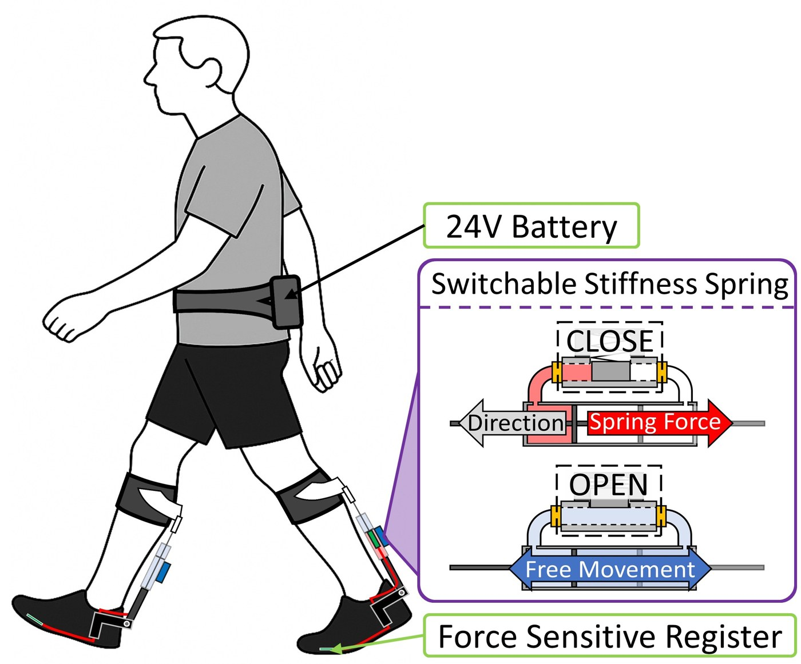
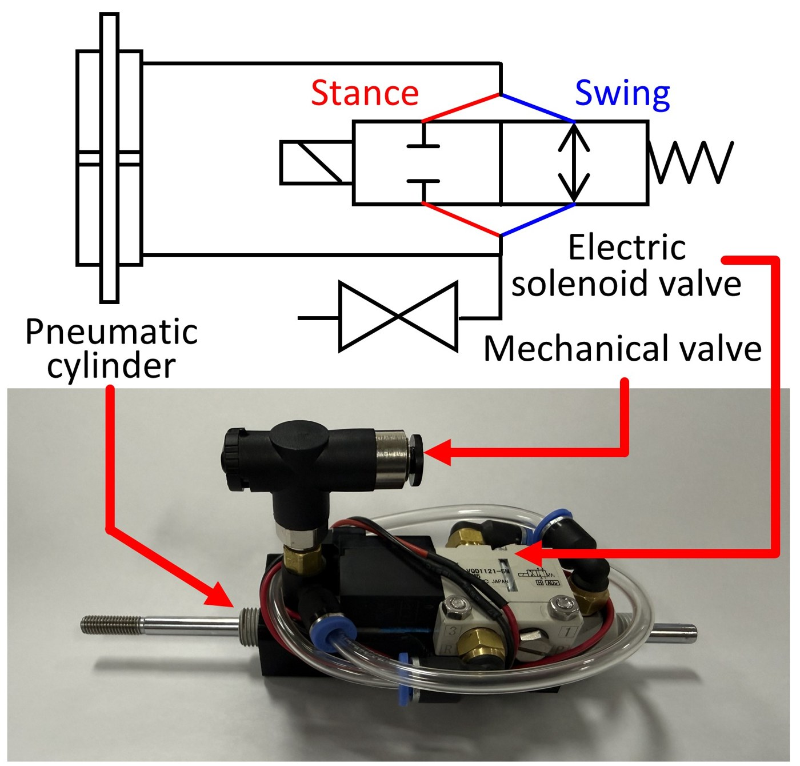
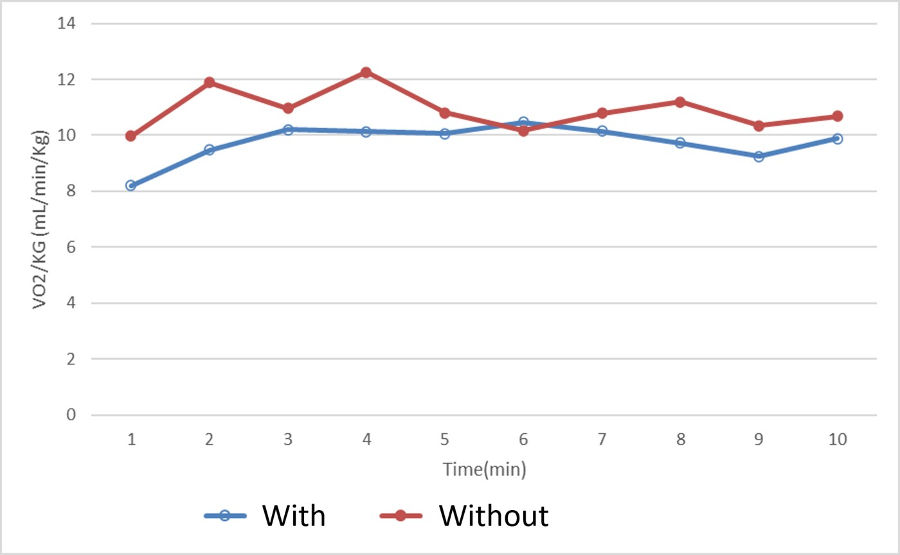

Mingyu Seong
Wearable Robotics · Assistive Exoskeletons · Gait Control
I am a master's graduate in Robotics Engineering from Yeungnam University, where I worked with Prof. Jungsu Choi in the Human Robot Convergence Laboratory. I design wearable assistive robots — ankle exoskeletons that reduce the effort of walking — and I build every layer of them, from the mechanism to the circuit that times the assistance to the human study that says whether it worked.
I am applying for PhD study starting Fall 2027. Control of assistive devices is the work I want to do, and I bring to it something uncommon on that side of the field: I can build the device the controller runs on.

Recent
- Feb 2026Completed my M.S. in Robotics Engineering at Yeungnam University.
- Jan 2026Filed a Korean patent application for the ankle assist device.
- Nov 2025Presented our switching-stiffness pneumatic spring at ICCAS 2025.
- Oct 2025Presented the personalized Robotic Achilles Tendon at IROS 2025 in Hangzhou.
- Jul 2025Presented the semi-passive ankle assist system at the Joint IFAC MECHATRONICS / ROBOTICS Symposium in Paris.
Research
Robotic Achilles Tendon
A semi-passive ankle-assist exoskeleton. Instead of a motor, it stores the wearer's own ground reaction force in a pneumatic spring during stance and returns it at push-off. The spring's stiffness is switchable, so the same device can be matched to a particular walker rather than built for an average one.
Across six subjects walking at 4 km/h, wearing the device reduced metabolic cost by 14.3% compared with walking without it, at a worn mass of 0.99 kg. I led the work end to end: mechanism design, sensing and phase logic, benchtop force characterization, and the human-subject protocol.

Control
Where the control actually sits
A passive spring on an ankle is only useful if it engages and releases at the right moments in the gait cycle. That timing is the control problem in this device, and it is the part I designed.
-
Sense
A single force-sensitive resistor under the foot. No IMU, no encoder, no motor current to read.
-
Detect
Heel strike and toe off are picked out by a Schmitt trigger built in analog hardware. Hysteresis is set by resistor values, not by code — there is no microcontroller in the loop.
-
Act
A solenoid valve switches the pneumatic spring between engaged and free. Two states, one transition per phase boundary.
-
Tune
Threshold and stiffness pair are selected per subject from benchtop characterization and a walking trial, rather than fixed across everyone.

There is no microcontroller in this device. That was a decision.
A semi-passive design has no motor and no digital controller — that is precisely how it reaches 0.99 kg and runs all day on one battery. The phase logic still had to be designed; I put it in analog hardware because the mass budget said that is where it belonged. Choosing where in the stack a control law should live is an engineering decision, and I made it.
What the project actually demanded was every layer at once, and I built all of them myself.
Control is not the layer I am missing — it is the layer I am choosing. It is also the one I trained hardest in: my graduate coursework is control-heavy and I earned an A+ in every control course I took. In a PhD I want to work on control of assistive devices with an advantage that is genuinely uncommon on that side of the field — I can design the hardware the controller runs on, instrument it, put it on a person, and run the study that settles whether the control actually helped.

Control training
Graduate coursework
Every graduate course from my M.S. at Yeungnam University, with the grade earned — 24 credits, 4.37 / 4.50. Course titles are as they appear on the official transcript. Notes describe what I implemented, not what was lectured.
Advanced Automatic Control
A+ Spring 2024Control Classical and state-space feedback design, with experiments on a two-link motor testbed.
Robot Dynamics and Control
A+ Spring 2024Control Manipulator dynamics and two-degree-of-freedom control of a two-link arm.
Automotive Control Engineering
A+ Fall 2024Control Lag–lead compensator design from Bode and step response, state-space modeling, term project built in Simulink.
Advanced Motor Design
A+ Spring 2025Control Field-oriented current vector control; machine design term project in ANSYS Maxwell.
Advanced Linear Algebra
A+ Spring 2025Math Jacobians and velocity / force manipulability ellipsoids for 2- and 3-link manipulators, implemented in MATLAB and applied to a Doosan M0617 arm.
Advanced Robotics
A+ Fall 2025Math Kinematics, planning and manipulator control.
Advanced Mechatronics I
A Spring 2024Systems Model-based control of soft robots; seminar and final presentation on the state of the art.
Advanced Robot Mechanism Design
A Fall 2024Mechanism Mechanism synthesis and design for robotic systems.
Publications
Selected work
Four further papers at Korean domestic conferences (ICROS, KRoC), one with an Outstanding Paper Award. Full list in my CV.
Contact
Get in touch
I am applying for PhD positions starting Fall 2027 and I am glad to talk about assistive device control, or to send the full thesis and device videos.